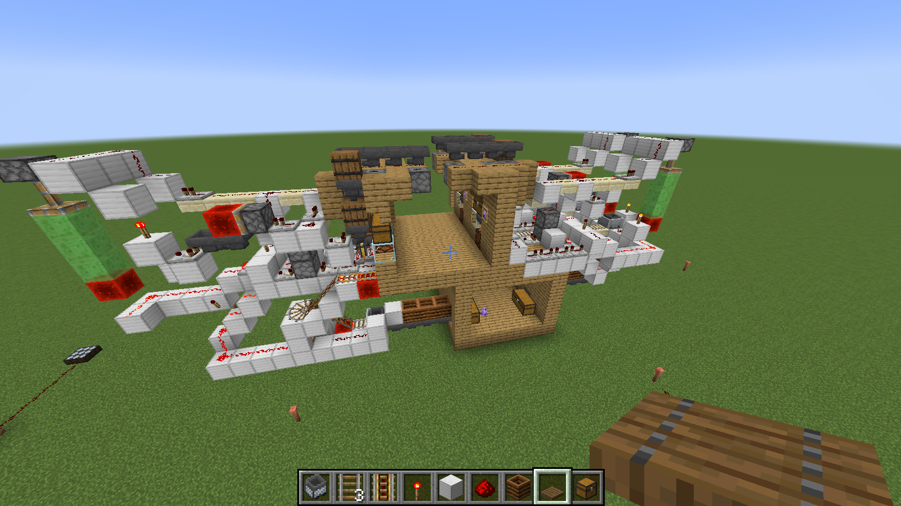
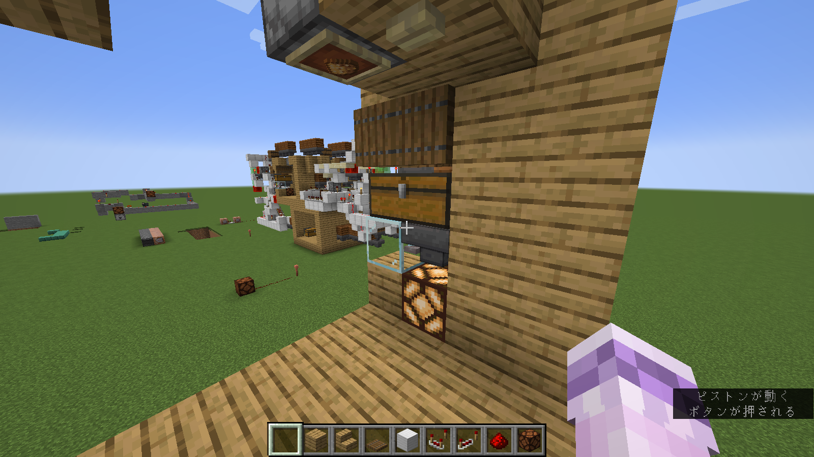
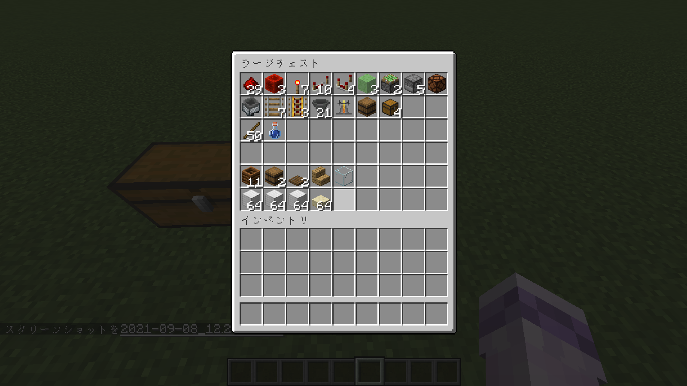
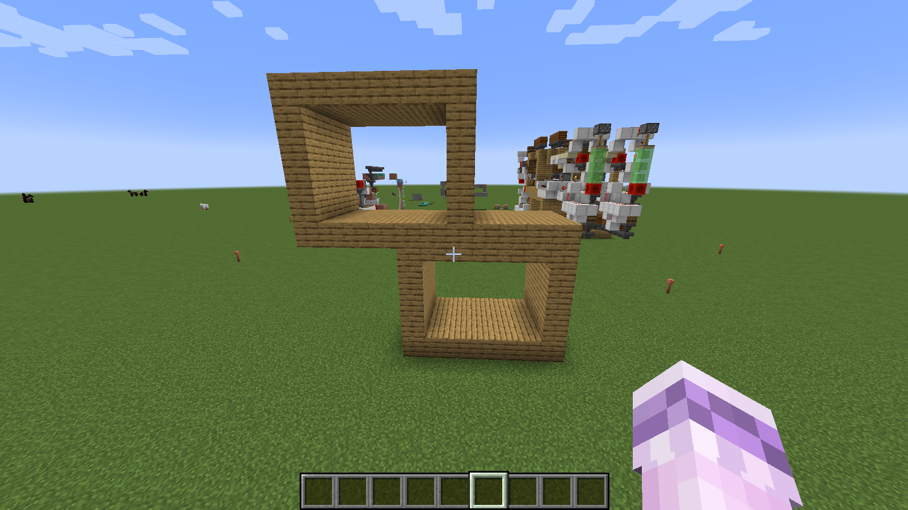
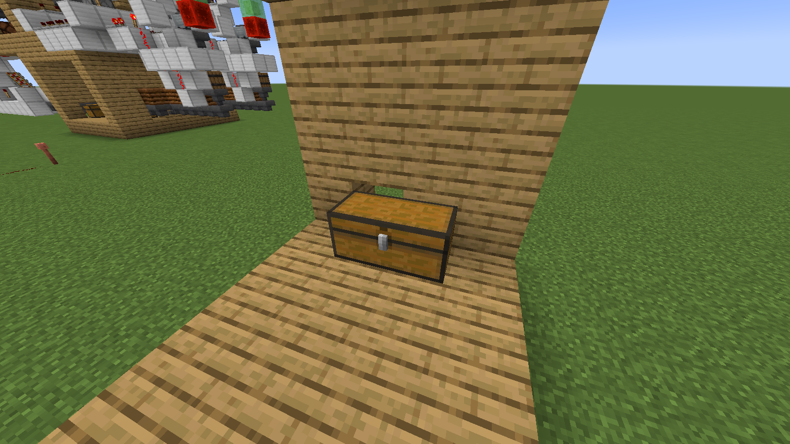

Lunatic電通生もっちゃんの部屋
某鯖の某ポーション部屋のための専用醸造場
これはなに？
時は2021年9月7日、高校の友達とで遊んでいる「担々麵鯖」に１通の依頼が入ってきた（正確には作れるかねえって感じだったけど）。
この場所に入りますかねえ。
いや、きつすぎじゃね？
どうやらこの中に、全種類のポーションがボタン１つで作れるようにしたいとのこと。いろいろ話を聞いて、以下のように落ち着いた。
- ポーション１種類につき１つの醸造台で調合する
- 大きさはいとわない（景観条例に違反しなければ）
- スプラッシュとかはあとで個別に行うので、とりあえずボタンを押せば普段使うポーションができてほしい。
できたわ。（思考6時間）
オークの木材（今は板材っていうの？）が、建物のサイズ。このたてものは山の中にあるから、まあ、山の中くりぬいても景観条例に違反しないやろ（小並感）ということで作った。
天井にあるボタン（今回はシラカバのボタン）を押すと、ランプが点灯して醸造が始まる。終わったら、下のフロアにあるチェストに入るという寸法である。
作り方（右タイプ）
14機ほど作るらしいので、いちいち聞かれると面倒くさいのでhtmlで記述することに。
右タイプ（装置の半分が下フロアに干渉しているほう）の１機あたりの必要アイテムはこんな感じ。これに「ボタン」と「額縁」をいれるのを忘れている。また、「鉄ブロック」や「砂岩のハーフブロック」はまあまあ使うので、石系の安価な素材で作成することをお勧めする。
１機の大きさは、幅４マスほど。後ろにはたくさん掘ることになりそう。（数えるの面倒くさかったから、装置の一回り大きめを掘ってくだせえ） 
まず下の段にチェストを設置する。幅４マスの中央２マスにおく。 